갱신: 2026-11-06. 범위: 청크 1의 네 장소 + 보스 청크 준비. 이 페이지가 예전 개별 보고서보다 우선합니다.
현재 범위는 청크 1의 네 장소와 보스 준비 청크입니다. 조우 UI·손 배치와 제공된 3D 학습 자판기 연결까지 반영했습니다. O는 해당 범위 구현 완료, X는 미작업 또는 최종 수치 미확정입니다. 시험값은 별도로 표시합니다.
게임 실행은 Assets/Scenes/MainMenuScene.unity → Play → 시작 버튼. 콘텐츠 등록·수식·상세 절차는 같은 폴더의 사용 설명서에서 확인할 수 있습니다.
2026-11-06 사용자 요청. 지불액은 ceil(기존 금액 ÷ 2). 1은 1, 0은 0입니다. 각 경로의 원래 금액을 따로 절반으로 줄였으며 경로별 차이는 유지했습니다.
| 작업 계획·항목 | O/X | 결과 |
|---|---|---|
| 이야기 지불액 | O | Terrain.json의 능력 지불 선택지 60개. 실제 차감·잔액 부족 판정·NPC 수령은 변경된 비용 데이터 사용. |
| 대사·선택 문구·의미 설명 | O | Story.json과 Explanation.json의 비용 숫자도 동일한 올림 기준으로 축소. 코인 명칭이 생략된 금액과 ‘동전’ 표기 포함. |
| 징수·대납 | O | 최종 금액 = ceil((기본 징수량 + 완료 장소 수) × 대납 배율 × 0.5). 곱셈을 마친 뒤 한 번만 올림. 안내와 차감이 같은 함수 사용. |
| 학습비 | O | 기존 1 → 1. 초기 잔액·학습 보상·활동 보상·피해량은 변경하지 않음. |
| 검증·문서 | O | 60개 비용 비교, 지불 외 액션 데이터 유지, 대사·선택지·재현 빌더 검사 통과. 메인 메뉴 진입 후 브룩 지불 분기를 도우미로 열어 기존 선택/확인 경로로 속도 5→0 차감 확인. 모든 장소를 다시 수동 완주한 검사는 아님. |
| 기존 | 현재 |
|---|---|
| 1 | 1 |
| 4 | 2 |
| 5 | 3 |
| 6 | 3 |
| 7 | 4 |
| 8 | 4 |
| 10 | 5 |
| 12 | 6 |
| 15 | 8 |
| 20 | 10 |
징수(완료 장소 0~4개): 지정 코인 [1,2,3,4,5] → [1,1,2,2,3], 다른 코인 [2,4,6,8,10] → [1,2,3,4,5]. 올림 때문에 최종 요구량 비율이 정확히 2배가 아닐 수 있어 대납 안내는 선택지의 실제 금액을 표시합니다.
이야기: Assets/Decision_YYS/Resources/Chapters/Chapter_01/Terrain.json → actions → choiceRules → abilityCost. 실제 금액을 직접 입력하며 이미 절반 적용된 값입니다. 여기에 다시 자동 반값을 곱하지 않습니다. 문구는 같은 챕터의 Chapter_01_01/FirstMeetings/Story.json, 의미 설명은 Explanation.json에서 함께 수정합니다.
징수: Assets/Decision_YYS/Resources/Chapters/Chapter_01/Rules.json → taxCostScale=0.5. 기본량 baseTax=1, 대납 배율 alternatePaymentMultiplier=2 유지. 이 값은 Inspector 컴포넌트가 아닌 JSON 설정입니다. 학습비 Inspector는 DecisionScene → _UI/Decision_Canvas/Decision_UI_Root/LearningStation → Mine Learning Station → Costs=[1,1,1,1]입니다.
재현 도구 AgentScripts/BuildMineChapter.py에도 승인된 수치 변환을 반영했습니다. 이미 수정한 출력 JSON에 재차 변환하는 것이 아니라 원문에서 생성할 때 한 번 적용합니다. 이번 작업에서 새 임시 코드는 만들지 않았습니다. 격리 검증 저장 output/MineChapterReview/MenuSave-20261106-005045, output/MineChapterReview/MenuSave-20261106-005357는 결과 확인 후 정리 대기입니다. 기존 임시 코드 대기 상태는 아래 기록을 유지합니다.
최종 컴파일·Console 오류 0, 기존 경고 1. 정상 저장과 Play 설정 복원. 금액별·선택지별 변경과 검증 기록
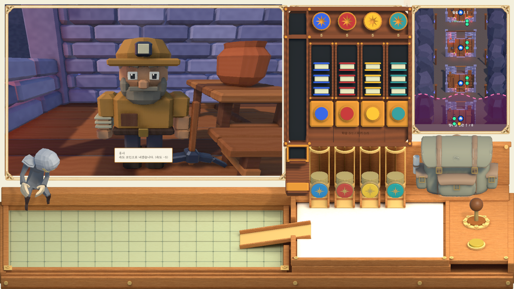
2026-11-05. LearningDispenserPrototype_v1 패키지를 기존 프로젝트의 AiAsset에 정리하고, 참고 이미지처럼 네 코인 공급통 위에 임시 배치했습니다.
| 계획·작업 | O/X | 결과 |
|---|---|---|
| 패키지 확인·AiAsset 정리 | O | 동일한 기존 에셋을 GUID 보존 이동. 위치: Assets/AiAsset/LearningDispenserPrototype. Static 프리팹 사용. |
| 이미지 기준 임시 배치 | O | 기존 네 코인 공급통 위에 네 능력 열 정렬. 왼쪽 대기 통로·하단 배출부 포함. 공급통은 기존 오브젝트 유지. |
| 초기 빈 대기열·실제 학습 표시 | O | 프리팹의 장식용 39개 큐 타일·낙하 샘플 숨김. 새 게임은 빈 큐. 저장된 작업이 있으면 실제 작업 수만 복원 표시. |
| 버튼·배출·보상 연결 | O | 기존 MineLearningStation의 비용·시간·보상·저장 유지. 네 UI 버튼을 모델 버튼에 맞춰 연결. 등록 시 큐 타일, 학습 시 배출 책 표시. |
| 검증·수정 방법 문서화 | O | 메뉴 시작, 네 버튼 Raycast, 1개 진행·5개 대기, 만석 추가 차감 방지, 정지 시 시간 유지, 실제 프레임의 +2 보상·FIFO·표시 개수 확인. |
| 최종 자판기 외형·학습 성장 구간 | X | 제공 모델을 임시 사용. 최종 아트와 지식별 동시 학습·큐 용량 수치는 사용자 확정 후 적용. |
씬: Assets/Scenes/DecisionScene.unity. Play 종료 후 값을 수정하고 씬을 저장하세요.
| 수정 대상 | Hierarchy → 컴포넌트·필드 | 현재 값·방법 |
|---|---|---|
| 자판기 위치·크기 | LearningDispenser → Transform | Position=(4.042904,-4.999969,0.392273), Rotation=(30,0,0), Scale=(0.868950,0.868950,0.868950). 루트 이동 시 버튼·숫자는 앵커를 따라감. 아래 기존 공급통 위치는 별도. |
| 대기열 시작·간격 | LearningDispenser → Learning Dispenser View → Queue Bottom / Queue Step | 연결된 QueueBottom의 로컬 Position=(-2,0.25,-0.25). Queue Step=(0,0.126,0). 큐 개수는 실제 대기 수를 사용하며 미리 채우지 않음. |
| 배출 경로·학습 책 쌓기 | LearningDispenser → Learning Dispenser View → Outlet Path / Active Step | OutletPoint_0~3을 Scene에서 이동. 로컬 좌표 (-2,0.25,-0.3) → (-2,-0.35,-0.35) → (-2,-1,-0.4) → (-2,-1.55,-0.3). Active Step=(0,0.32,0). |
| 책·큐 외형 | LearningDispenser → Learning Dispenser View → Queued Tile Prefab / Learning Book Prefabs | AiAsset의 ScheduledTile, LearningBook_0~3 사용. 네 능력 순서: 힘·속도·지능·매력. |
| 버튼·숫자·시간 위치 | LearningDispenser → Learning Dispenser View → Overlays / Overlay Anchors | 모델의 PressButton, BalanceAnchor, StatusAnchor, TimerAnchor 위치를 수정. 표시 UI는 LearningDispenserOverlay 아래. RectTransform 위치는 앵커 추종으로 매 프레임 갱신됨. 글자 크기는 해당 TMP의 Font Size 수정. |
| 용량·비용·보상·시간 | _UI / Decision_Canvas / Decision_UI_Root / LearningStation → Mine Learning Station | Capacities: 지식 0부터 동시 1·대기 5. Costs=각 1, Rewards=각 2(시험값). Minimum/Maximum Seconds=5, Random Duration=꺼짐, Delivery Seconds=0.6. 통로 연출도 이 시간을 공유. |
MineLearningStation이 기존 경제·FIFO·저장을 담당하고 LearningDispenserView는 실제 작업을 3D로 표시합니다. 기존 평면 책 표시는 Show Flat Books=꺼짐. 새 학습 시스템이나 별도 재화를 만들지 않았습니다. AssetBuild/LearningDispenser/BuildLearningDispenser.cs는 에셋 재현 도구로 유지하며 새 AiAsset 경로를 사용합니다.
분리된 검증 저장으로 실행. 초기 잔액 [5,5,5,5] → 6개 등록 [4,3,3,4] → 속도 학습 완료 [4,5,3,4]. 다음 지능 학습·대기 4개와 표시 일치. 정지 검사는 Station.Tick의 stop 인자 경로로 확인했으며, 이번에 모든 미니게임을 다시 완주한 검사는 아닙니다. 최종 Console 오류 0, 기존 경고 1. 정상 저장·Play 설정 복원.
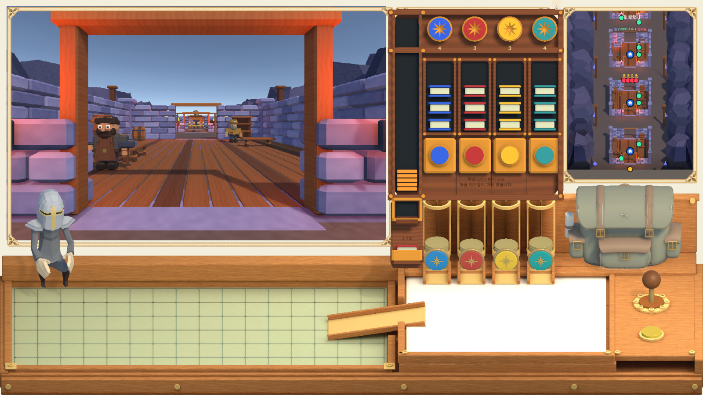
임시 작업 코드: AgentScripts/ConnectLearningDispenser.cs — 씬 연결·검증용, Git 제외, 사용자 결과 확인 후 삭제 대기. 실행에 필요한 LearningDispenserView와 에셋 재현 도구는 유지합니다. 분리 검증 저장 2개(MenuSave-20261105-013747, MenuSave-20261105-014450)도 이번 검증 산출물로 정리 대기.
2026-11-04. Play 모드의 DuelNpcHand 배치를 읽어 NPC 기준점에 적용했습니다. 플레이어 손 설정은 유지했습니다.
| 계획·항목 | O/X | 결과 |
|---|---|---|
| 사용자 Play 배치 기록 | O | NPC Position=(-3.37,-5.69,1.546619). 이동·공격 기준점에 이 위치와 기록한 회전 적용. npc-hand-user-pose.json 보존. |
| 플레이어 손 유지 | O | 조작 Z=-0.78, Held Forward Offset=0.9782 유지. 최초 검 배치·크기·입력 감도 유지. |
| NPC 조정 후 입력 방어 검사 | O | Input System 합성 마우스로 검 클릭·마우스 이동·우클릭 가드 유지. 일반 Update·Animator·실제 칼날 접촉에서 방어 성공. NPC 루트 Z≈1.546619, 플레이어 루트 Z≈-0.78. |
| 선택지 이름·방향 | O | 선택 중·확정 후 플레이어 발화 이름을 “용사”로 표시. 좌상·좌하·우상·우하 등의 방향 문구 생략. 기어의 선택 매핑과 노란 진행 버튼 입력은 유지. |
| 전투 전체·모든 타이밍형 패링 | X / 이번 미검증 | 이번 확인은 베기/가드 입력 흐름. 모든 공격과 승패를 사람이 수동 완주한 검증은 아님. |
Inspector: DecisionScene → _Systems / DuelMiniGame → Npc Duel State Machine → Vertical Attack Pose의 연결 오브젝트 NpcVerticalAttackPose. 이동 깊이는 Duel Authoring References → Npc Hand Patrol Pose의 연결 오브젝트. 두 NPC 기준점의 Position=(-3.37,-5.69,1.546619). 플레이어는 Duel Mouse Hand Controller → Held Forward Offset=0.9782.
손 리그와 애니메이션의 로컬 칼날 오프셋이 달라 두 손 루트의 Z가 달라도 실제 칼날은 접촉할 수 있습니다. 현재 검증한 배치를 기준으로 조절하며 루트 Z만 강제로 같게 맞추지 마세요.
검증: 선택지에 용사 표시·방향 생략, 배경 자동 크기·하단 위치 유지, NPC 새 위치에서 입력 방어 성공. 컴파일·Console 오류 0. 기존 groundPrefab 경고 1개 유지. 새 에셋 없음.
사용자 NPC 배치 · 새 NPC 배치 입력 방어 · 용사·방향 생략 확인
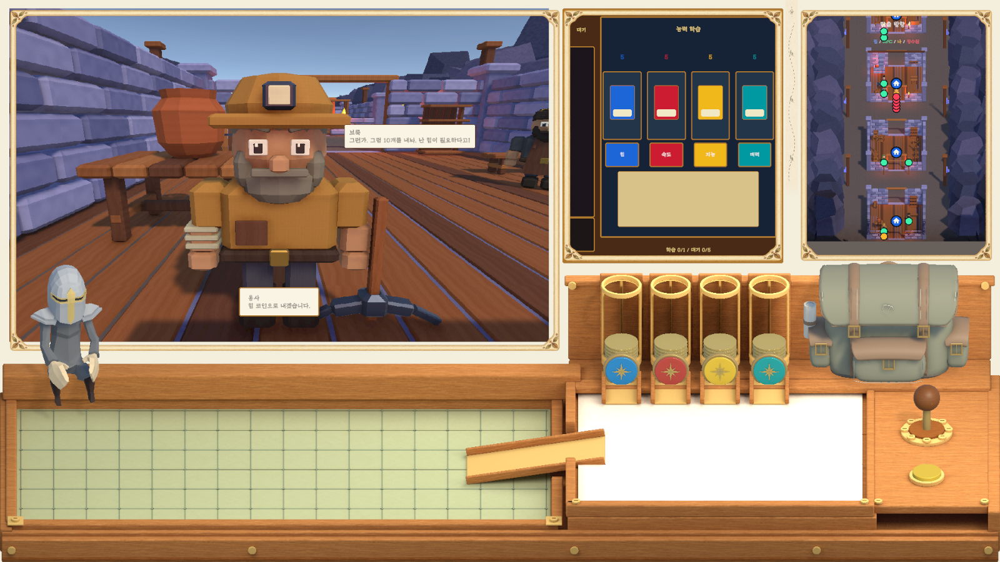
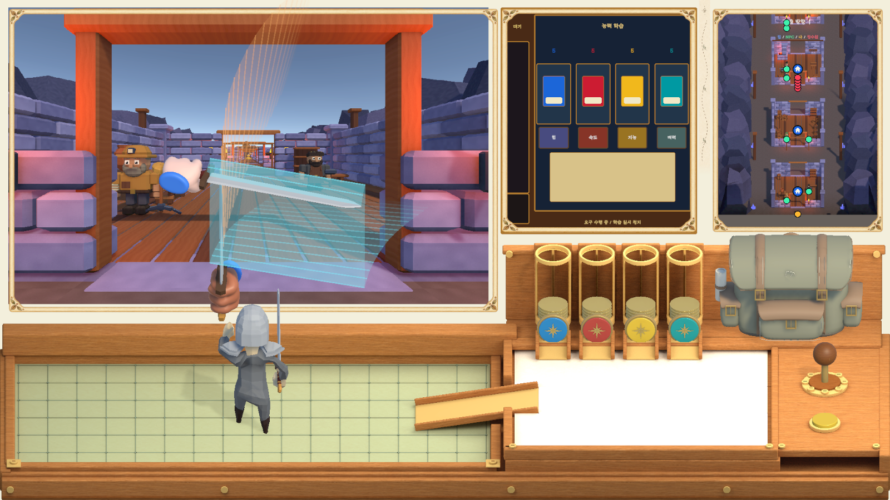
검사는 별도 저장과 임시 합성 마우스로 수행했고 원래 입력 설정을 복원했습니다. 임시 도우미 AgentScripts/UIEncounterRevision.cs는 2026-11-04 사용자 요청으로 삭제 완료했습니다.
2026-11-04. 사용자가 Play 모드에서 조정한 DuelPlayerHand의 Z=-0.78을 기록해 적용했습니다. 이전 접촉 검사는 손 위치를 직접 정렬한 검사였으며, 이번에는 마우스 입력 경로를 추가 검증했습니다.
| 단계·항목 | O/X | 수정·확인 내용 |
|---|---|---|
| 실행값 조사·보존 | O | 플레이어 손 (-3.766666,-5.95,-0.78) 기록. X/Y는 마우스로 이동하는 값, Z를 조작 기준에 저장. |
| 선택지 배경 자동 크기 | O | 현재 줄바꿈된 Rect 너비 대신 제한 없는 문장 너비를 먼저 측정. 화면 너비 × Choice Width Fraction까지 가로 확대, 초과 시 줄바꿈·세로 확대. 좌우 여백 각 12로 측정·실제 글자 영역을 일치. |
| 표시한 하단 중앙 배치 | O | Player Area Anchor Min=Max=(0.5,0.12), Pivot=(0.5,0.5), Anchored Position=(0,0). 별도 확인 버튼 없음. 기어 선택·노란 버튼 확정 유지. |
| 플레이어 손 깊이 되돌림 | O | Held Forward Offset=0.9782 → 기사 Z(-1.7582)+0.9782=-0.78. 이전 1.035282 조작 평면에서 사용자 지정 깊이로 변경. |
| NPC 공격 접근 | O | NpcVerticalAttackPose=(-3.37,-5.69,-0.78). 이동 중 NpcHandPatrolPose는 Z=1.035282 유지하고 공격 준비 때 플레이어 쪽 깊이로 접근. 기존 애니메이션·공격 간격·충돌 규칙 유지. |
| 일반 마우스 입력 경로의 방어 | O | Input System 합성 마우스 장치로 실제 클릭 → 검 잡기 → delta 이동 → 우클릭 가드 유지. 일반 Update·Animator·실제 칼날 접촉에서 AttackBlocked=true. 손 Transform 직접 배치·공격 시점 강제 샘플링 없이 통과. |
| 모든 공격·타이밍형 쳐내기·승패 완주 | X / 이번 미검증 | 이번 입력 검사는 베기/가드 한 흐름의 방어 성공까지. 모든 패턴의 수동 플레이 완주를 뜻하지 않음. |
선택지 크기 검사: 짧은 문장 너비 120 / 안내 문장 190.6 / 긴 문장 최대 673.4에서 줄바꿈·높이 86.01. 세 경우 모두 글자가 배경 안에 들어오는 것을 확인했습니다. 최종 컴파일 오류 0·Console 오류 0, 기존 groundPrefab 경고 1개 유지.
짧은·보통·긴 문장 검사 · 일반 입력 경로 방어 검사 · 사용자 Play 배치 기록
입력 검사는 별도 저장·임시 합성 마우스로 수행했습니다. 에디터 포커스에 막히지 않도록 입력 설정을 메모리 복제했으며 검사 후 원본 설정·장치를 복원했습니다. 물리 마우스를 사람이 조작해 완주한 검사와 구분합니다. 새 에셋 없음. 임시 도우미는 기존 AgentScripts/UIEncounterRevision.cs를 이어 사용했고 삭제 완료 상태입니다.
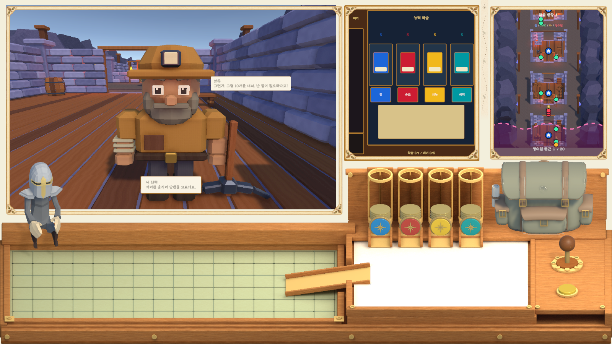
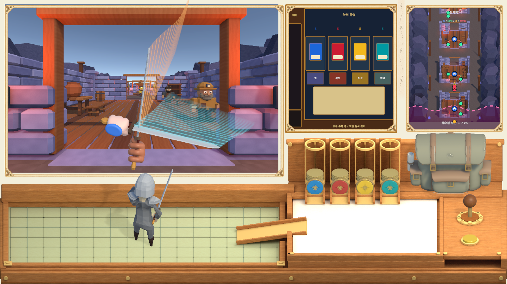
| 계획·작업 | O/X | 적용·확인 |
|---|---|---|
| 실행 중 사용자 NPC 손 위치 기록 | O | DuelNpcHand=(-3.37,-5.69,1.035282), 회전=(7.965,92.381,273.146). 위치·회전 JSON 기록 후 기준점에 저장. |
| 대사 영역 이동 | O | 플레이 화면 오른쪽, 왼쪽 맞춤. NPC Area 앵커 Min=(0.62,0.58), Max=(0.92,0.97). Message Gap=12. 폰트 12·문장별 배경·상승·페이드 유지. |
| 선택지 중앙·확인 버튼 제거 | O | Player Area 앵커와 Pivot=(0.5,0.5), Position=(0,0). 배경이 문장 길이로 변해도 중앙 유지. 별도 확인 버튼은 비활성화. 기어 선택 → 기존 노란 진행 버튼 확정. |
| NPC 이동·공격 기준점 수정 | O | NpcHandPatrolPose와 NpcVerticalAttackPose에 사용자 NPC 손 배치 적용. 기존 이동 곡선·공격 애니메이션·판정 규칙 유지. 손을 잡은 후 실제 위치 변화 확인. |
| 양쪽 칼날의 깊이 일치 | O | 기존 공격 기준점 Z=-1.65와 플레이어 조작 평면이 달랐던 부분 수정. 공격/이동 기준점 Z=1.035282. Held Forward Offset=2.793483 → 기사 Z(-1.7582)+오프셋=1.035282. |
| 실제 칼날 방어 접촉 | O | 원래 Slash·Guard 애니메이션 사용. 설정된 깊이를 유지하며 플레이어 손 X/Y만 조정해 실제 칼날 BoxCollider 접촉 검사. CheckDefenseContact에서 AttackBlocked=true, 방어 성공·접점 효과 확인. 충돌 크기·피해·판정 코드는 변경하지 않음. |
| 선택 비용 글자 표시 | O | 현재 폰트에 없는 수학 마이너스 대신 일반 하이픈(-)을 표시해 네모 글자 경고 방지. |
| 전투 전체 승패·찌르기 쳐내기 전체 검증 | X / 이번 미검증 | 이번 검사는 이동·베기/가드의 실제 3D 접촉을 대상으로 함. 모든 패턴·타이밍·승패를 수동 플레이로 완주한 의미는 아님. |
핵심 코드 변경: FloatingDialogueView의 대사 왼쪽 정렬·간격·확인 버튼 숨김·가운데 선택 표시, DecisionManager.Encounters의 비용 문자. 결투 수정은 기존 씬 기준점과 Inspector 값에 적용했습니다. 새 에셋 없음.
중앙·확인 버튼 검사 · 실제 NPC 이동 · 3D 접촉·방어 성공 · 사용자 실행 중 배치 기록
최종 컴파일 오류 0·Console 오류 0. 기존 groundPrefab 미지정 경고 1개 유지. 검증은 메인 메뉴 시작·별도 저장으로 수행. 접촉 검사는 원본 애니메이션 시점을 샘플링하고, 설정 깊이에서 X/Y만 조절한 개발용 검사입니다. 사용자의 기존 저장에는 적용하지 않았습니다.
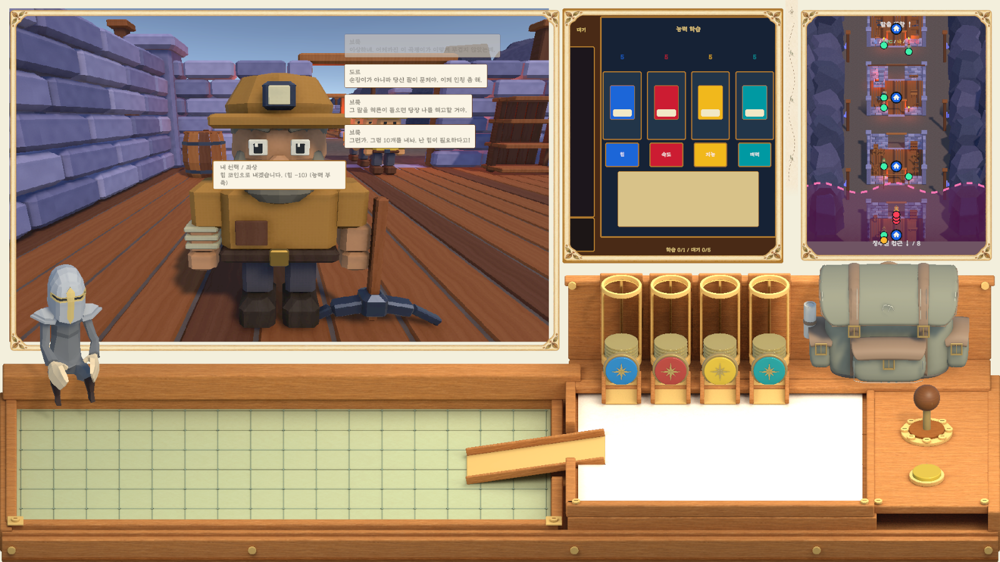
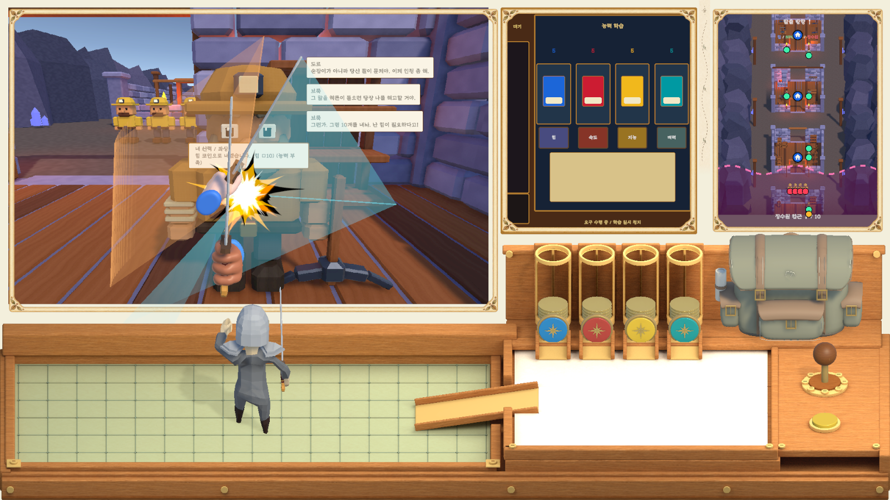
O는 명시된 기능까지 적용, X는 미작업·후속 범위입니다.
| 항목 | O/X | 현재 내용·남은 부분 |
|---|---|---|
| NPC 대사·플레이어 선택 UI | O | 화면 안의 불투명 박스·폰트 12. 문장별 배경 너비·높이, 기본 유지 6초·페이드 1.2초. 이전 대사는 위로 이동·소멸. 대사는 지정한 오른쪽 영역에서 왼쪽 정렬. 선택은 표시한 하단 중앙, 문장 길이에 따른 가로·세로 자동 크기, 별도 확인 버튼 없음. 기어·노란 진행 버튼 연결. |
| 학습 자판기·대기열·저장 | O | 초기 동시 1 / 대기 5 / 5초. FIFO 배출, 비용 1·완료 2 시험값. 이동·대화 중 진행, 요구·미니게임 중 정지 후 재개. |
| 지식별 학습·대기 용량 / 랜덤 시간 | O | 인스펙터 단계표·시간 범위로 조절. 추가 지식 구간 수치는 미정(X). |
| 지도 위치·징수 접근 표시 | O | 건물·NPC·플레이어·징수원 마크, 실제 좌표 투영, 분홍 경고 영역·거리·방향. |
| 앉은 플레이어 | O | 사용자 실행 중 위치·회전·Scale 0.5 저장. X Bot@Sitting Idle 반복. 전용 Avatar 기준 자세를 T 자세로 보정해 양손이 무릎 앞으로 향함. 결투 생성 시 숨김, 정리 후 복원. |
| 메인 메뉴 시작 | O | MainMenuScene → 기존 시작 버튼 → DecisionScene. |
| 갱도 청크·네 장소 | O | MineChunkModularPack, 길이 120. 브룩·도르 / 모아·피코 / 틸·벨라 / 네아·시아. |
| 이야기·선택·비용 데이터 | O | 102개 이야기 노드, 발화 카드 332개, 유료 선택 60개 경로. Story / Explanation / Terrain 행동 규칙을 조합. |
| 고정 대사·첫 만남 | O | 도르 “켄타우로스라고? 진짜 다리가 네 개라고?” 반영. 소문과 네아·시아의 첫 만남은 고정. |
| NPC 8명 외형 | O | 제공된 Chunk1StoryNPCPack_Appearance_URP를 AiAsset으로 이동하고 장소별 연결. |
| 실제 접근·위치 편집 | O | 플레이어가 문을 거쳐 실제 이동. MineNPCPlacement의 장소별 후보 5개 중 선택. 같은 회차 Seed로 위치 복원. |
| 카메라 | O | NPC 중앙 정렬·결투 전신 표시·대화 후 +Z 정면 복귀. 1인칭 카메라에서 자기 몸과 검 제외. |
| 보드 기사·검·손 | O | 기사 크기 0.5. 양쪽 손 시작점 Z=-0.9582, 기사 Z보다 0.8 앞. 잡은 뒤 깊이는 기사 위치 + Held Forward Offset(0.9782) = -0.78. NPC 이동·공격 기준점은 사용자 배치 Z=1.546619. 실제 칼날 접촉으로 방어 확인. 검 클릭 시 양손 표시·기존 조작 연결. |
| 지불·부족 분기·저장 | O | 능력 차감·NPC 수령 기록·중복 방지. 부족한 지불 시도는 잠금 대신 이야기·결투로 진행. |
| 노동·경주·동전·피로 | O | 대기·능력 증감·승패·강제 휴식과 기존 보드 연결. 수치는 사용 설명서에 기록. |
| 징수원 이동·대형·징수 | O | 임시 3~5명. 초기 4→3→2→1, 이후 1→2→3→4. 바깥 가로 이동, 문 앞 일렬, 출구 가로 정렬 후 3초 대기. 조우 후 전진. 징수 대사·선택은 일반 NPC UI와 동일. |
| 징수 후 퇴장·재등장 | O / 시험값 | 청크 끝에서 숨김 → 5초 후 끝에서 4→3→2→1 입장 재시작. 대기 상태 저장. 숨은 동안 지도 마크·접근 경고 없음. |
| 최종 징수원 재등장 주기 | X | 추후 확정. 현재 Return Delay Seconds=5초 시험값. |
| 보스 청크·지도 표시 | O | BossRevealMapPack 사전 로딩. 마지막 장소에서 지형·Boss1 표시. 지도 전방 오프셋 10, Orthographic Size 24. |
| Boss1 대기·포효 | O | 중앙 배치, 균일 Scale 약 7.37. 기존 Idle 11.3초 / Sword_Shout 6.2초 반복, 발 높이 보정. |
| 일반 NPC·징수원 애니메이션 | X | 외형은 연결했으나 리그·대기·걷기·대화 클립 미연결. 징수원 애니메이션은 사용자 지시로 보류. |
| 노동·휴식·경주·NPC별 결투 연출 | X | 전용 동작·리그 연결 필요. 경주는 게이지, 결투 보드는 공통 기사·손 표현 사용. |
| 카르덴 전투·징수 실전 강화 | X | 현재 Boss1은 미리보기. 보스전·패턴·강화 적용은 후속 범위. |
| 전용 성장 미니게임·나이·능력 유지·NPC 성장 | X | 시간형 학습과 이동 병행은 적용. 별도 성장 미니게임, 나이·유지·NPC 성장 반영은 미작업. |
| 신분 통행료·코인 전체 통합 | X | 신분 가중치는 제안식만 존재. 기존 물리 공급·베팅 전체의 완전 통합 미작업. |
| 갱도 하늘·로컬 AI 품질 검증 | X | EmacEArt_sky 미적용. 실제 로컬 모델의 기분별 대사 품질 인증 미실행. |
| 전체 모듈화·콘텐츠 완전 자동 추가 | X | 현재 JSON·프리팹·인스펙터 연결 방식. 청크 1 전용 조건과 네 장소·두 배우 기준이 남아 있음. |
Assets/Scenes/DecisionScene.unity를 열고 Hierarchy에서 아래 오브젝트를 선택하세요. 검색창에 마지막 오브젝트 이름을 입력해도 찾을 수 있습니다. 영구 적용은 Play 종료 → 값 수정 → 씬 저장 순서입니다. Play 중 값 변경은 종료 시 되돌아갑니다.
| 수정 항목 | Hierarchy 경로 | 컴포넌트·필드 | 현재 값·방법 |
|---|---|---|---|
| 앉은 병사 위치·크기 | KnightCharacter_Copy_Exam | Transform / Position, Rotation, Scale | Position=(-6.77601, -7.400184, 0.731844), Rotation Y=167.5517, Scale=(0.5,0.5,0.5). 실행 중 사용자 배치를 저장. |
| 앉기 리그·애니메이션 | KnightCharacter_Copy_Exam | Animator / Avatar, Controller | SeatedKnightAvatar / SeatedKnight. 원본 X Bot@Sitting Idle의 Sitting Idle 반복. Avatar 기준 자세를 보정했으며 원본 FBX·전투 모델은 유지. |
| 대사 크기·표시 수·페이드 | _UI / Decision_Canvas / Decision_UI_Root / Encounter_Display / Event_View / Walking_View_Back / Walking_View / FloatingDialogue | Floating Dialogue View / Font Size, Visible Messages, Slide Seconds, Hold Seconds, Fade Seconds, Message Gap, Choice Width Fraction | 12 / 3 / 0.3초 / 6초 / 1.2초 / 간격 12 / 선택 최대 너비 비율 0.65. 문장 길이에 따라 배경 너비·높이를 계산하고 최대 영역을 넘는 긴 문장은 줄바꿈. |
| 대사·선택 영역 위치 | _UI / Decision_Canvas / Decision_UI_Root / Encounter_Display / Event_View / Walking_View_Back / Walking_View / FloatingDialogue | Floating Dialogue View / Npc Area, Player Area → 연결된 RectTransform | Npc Area: Min=(0.62,0.58), Max=(0.92,0.97). Player Area: Anchor Min=Max=(0.5,0.12), Pivot=(0.5,0.5), Position=(0,0). 연결된 RectTransform을 수정. 문장 배경은 실행 중 자동 크기 조절. |
| 징수원 대형·속도·재등장 | MineTaxCollectors | Mine Collector Procession / Return Delay Seconds, Row Wait Seconds, Arrival Speed, March Speed, Spacing, Stops | 재등장 시험값 5초 / 출구 정렬 대기 3초 / 초기 이동 3 / 진행 이동 0.25 / 간격 1.2. Stops=네 장소 입출구. 최종 재등장 주기 X·미정. |
| 플레이어 검 시작점 | _Systems / DuelMiniGame / PlayerHandRestPose | Transform / Position, Rotation | 현재 (-0.7,-7.51,-0.9582). 손 전체 생성 기준점이므로 검 자식만 옮기지 않기. |
| NPC 검 시작점 | NpcHandRoot | Transform / Position, Rotation | 현재 (-5.36,-7.72,-0.9582). 보드 기사 Z=-1.7582보다 +Z 앞쪽 0.8. |
| 손을 잡은 뒤 조작 깊이 | _Systems / DuelMiniGame | Duel Mouse Hand Controller / Held Forward Offset | 현재 0.9782. 조작 평면 Z = 기사 Z(-1.7582)+이 값=-0.78. 플레이어 설정 유지. NPC 이동·공격 기준점 Z=1.546619. 리그별 칼날 오프셋이 달라 루트 Z를 같게 강제하지 않음. |
| 전투 손 참조·이동 궤적 | _Systems / DuelMiniGame | Duel Authoring References / Player Hand Start Pose, Npc Hand Start Pose, Npc Hand Patrol Pose; Npc Duel State Machine / Screen Path, Vertical Attack Pose | 최초 검 시작점은 위 참조. Npc Hand Patrol Pose: Position=(-3.37,-5.69,1.546619). Npc Duel State Machine의 Vertical Attack Pose: Position=(-3.37,-5.69,1.546619). 회전은 (7.965,92.381,273.146). 실행 중 손은 복제본이므로 이 기준점을 수정. Screen Path는 이동 곡선 X/Y를 조절. |
| 보드 플레이어 | _Systems / DuelMiniGame | Duel Mini Game Bridge / Setup Controller → Tutorial Mini Game Controller / Knight Scale, Knight Spawn Pose | 연결된 KnightCharacter_Copy 기준 위치 (-2.95,-7.895,-1.7582), 크기 0.5. 손 위치를 옮겨도 기사 크기는 유지. |
| 학습 용량·비용·시간 | _UI / Decision_Canvas / Decision_UI_Root / LearningStation | Mine Learning Station / Capacities, Costs, Rewards, Minimum Seconds, Maximum Seconds, Random Duration, Delivery Seconds | 초기 동시 1·대기 5, 비용 1·보상 2 시험값, 시간 5초, 통로 0.6초. 지식 증가 구간은 추후 확정. |
| 지도 마크·접근 경고 | _UI / Decision_Canvas / Decision_UI_Root / RawImage / RawImage_Road_View_And_Map / LiveMapMarkers | Journey Map Markers / Warning Distance, Marker Size | 현재 40 / 16. 징수원이 사라지면 빨간 위치 마크와 접근 경고도 숨김. |
| 결투 중 앉은 병사 숨김 | _Systems / DuelMiniGame | Seated Player Preview / Seated Player, Duel, Mini Games | Seated Player가 KnightCharacter_Copy_Exam을 참조. 결투 생성 시 숨기고 정리 후 복원. |
| 구분 | 내용 |
|---|---|
| 사용자 확정 동작 | 처음에는 한 개씩. 지식 보유량으로 동시 학습·대기 한도 확대. 기본 학습 시간 5초, 시간 랜덤화 설정 제공. 일반 대화는 계속, 미니게임·요구 수행은 정지 후 재개. |
| 현재 시험 설정 | 초기 대기 5개. 비용 1·완료 2는 사용자 예시를 시험값으로 연결. 등록 순간 비용을 선차감하고, 만석·잔액 부족·일시 정지 중 입력은 차감하지 않음. |
| 미정 | 지식 코인 몇 개부터 동시 학습·대기열을 얼마씩 늘릴지, 최종 비용·보상·능력별 시간 구간. 미정 항목은 인스펙터에서 편집 가능하게 분리. |
| 상한이 내려간 경우 | 현재 지식 보유량이 줄어도 이미 비용을 낸 작업을 취소하지 않음. 진행 작업은 마치고, 빈자리 보충·새 등록에 현재 상한 적용. |
| 코인·사망 규칙 | 별도 화폐를 만들지 않고 기존 능력 잔액·공급통과 동기화. 마지막 힘 코인을 학습비로 쓰면 기존 힘 0 사망 규칙 적용. |
아래 순서는 작업 확정이나 자동 착수를 뜻하지 않습니다. 새 콘텐츠·에셋·규칙은 사용자 지정 후 진행합니다.
| 항목 | O/X | 현재 준비 상태 | 앞으로 필요한 결정·제공물 |
|---|---|---|---|
| 징수원 최종 재등장 주기 | X | 퇴장·반복 기능 O, 시험값 5초 | 최종 대기 시간. Inspector Return Delay Seconds에서 변경. |
| 지식별 학습·대기 용량 | X | 단계표 기능 O, 기본 동시 1·대기 5 | 지식 코인 임계값별 동시 학습 수와 대기 한도. |
| 학습 최종 비용·보상·시간 | X | 비용 1·보상 2·시간 5초는 시험값 | 능력별 최종 비용·보상, 랜덤 시간 범위. |
| 일반 NPC·징수원 애니메이션 | X | 제공 외형·임시 징수원 배치 O | 사용자가 지정한 리그 및 Idle·Walk·Talk 클립. 징수원 동작은 보류 중. |
| 노동·휴식·경주·NPC별 결투 연출 | X | 공통 규칙·보드·승패 연결 O | 사용할 모델·호환 리그·작업/휴식/경주/전투 클립과 연출 지정. |
| 전용 학습 미니게임·일어나서 작업 | X | 시간형 학습·대기열 O, 앉기 클립 O | 미니게임 규칙과 일어나기·작업 애니메이션. |
| 카르덴 전투·징수 강화 | X | BossReveal 맵·Boss1 Idle/포효 미리보기 O | 최종 보스 외형·공격/피격/사망 클립, 패턴·승패·강화 수치. |
| 나이·능력 유지·NPC 성장 | X | 시간형 학습과 능력 증감 일부 연결 | 성장·감소·유지·나이 진행 규칙과 저장 요구. |
| 신분 통행료·코인 전체 통합 | X | 지불·징수는 능력 잔액 사용 | 신분 판정·통행료 공식 확정, 기존 물리 공급·베팅 통합 범위. |
| 갱도 하늘·조명 | X | 기존 밝기·하늘 사용 | EmacEArt_sky 등 사용할 에셋과 최종 연출 지정. |
| 새 NPC·장소·챕터 완전 자동 추가 | X | JSON·프리팹·Inspector 연결로 현재 콘텐츠 확장 | 청크 1 전용 조건, 네 장소 경로·두 배우 제한 일반화. 새 콘텐츠 자동 등록 도구는 없음. |
| 로컬 AI 대사 품질 검증 | X | 고정 첫 만남·데이터 연결 O | 실제 모델의 기분별 대사 품질·원문 유지 검증. |
FloatingDialogueView: 폰트·문장 맞춤 배경·시간 기반 페이드·선택 확인 버튼 크기.DecisionManager.MineChapter / Encounters: 징수 응답을 기존 Presentation·기어·확인 흐름으로 전달하고 종료 시 원래 선택 상태 복원.MineCollectorProcession: Finished 단계에 저장된 대기 시간을 사용해 재입장. JourneyMapMarkers는 비활성 징수원 마크를 숨김.DuelMouseHandController: 고정 깊이 대신 기사 위치와 Held Forward Offset 사용. 씬의 양쪽 시작점 이동.SeatedKnightAvatar.asset / DecisionScene: 전용 Avatar 기준 자세와 사용자 Transform 저장.가장 최근 자판기 화면은 최신 자판기 연결, 이전 손 배치 화면은 NPC 손 배치에서 확인합니다. 아래는 이전 단계 기록입니다.
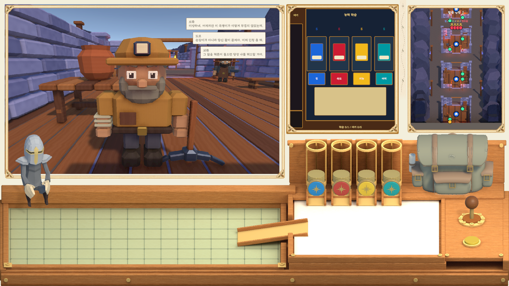
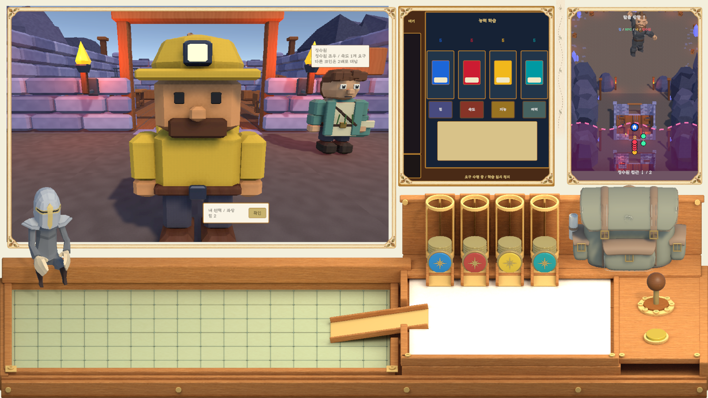
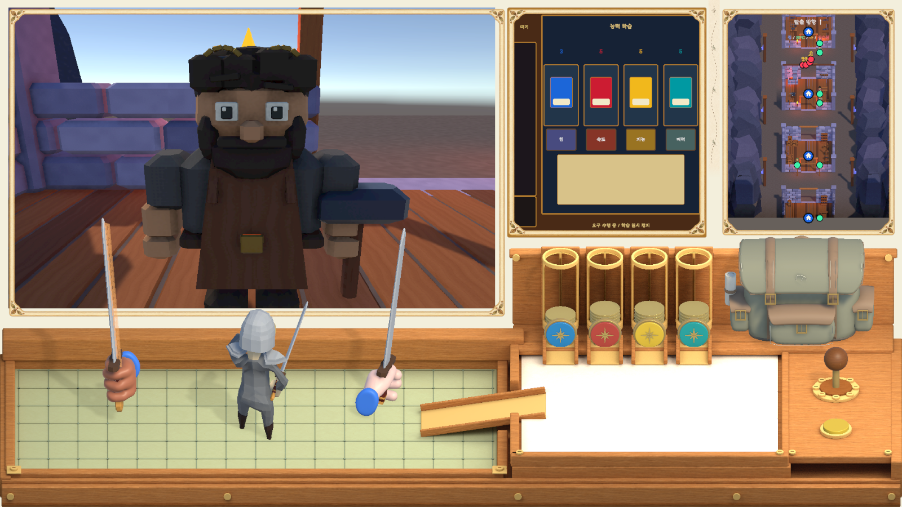
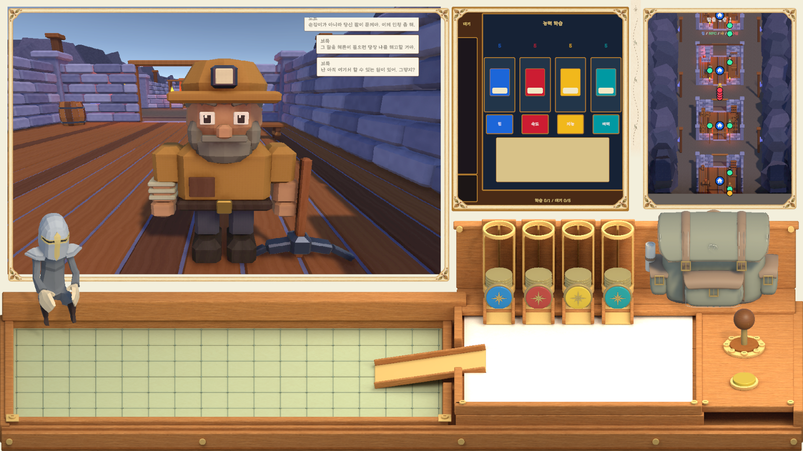
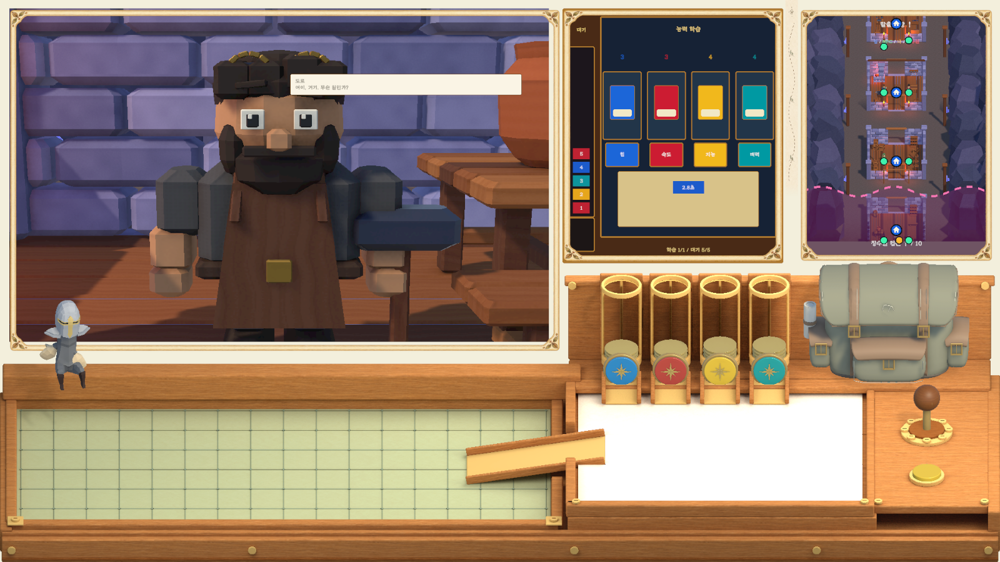
학습 대기열 이미지는 이전 단계 캡처이며, 대사·앉기·손 배치 최신 상태는 위 화면을 기준으로 합니다.

실제 마우스 입력으로 연결 확인. 최종 위치 변경 전 기록입니다.


기존 클립의 자세 확인용 캡처. 런타임에서는 두 상태를 자동 반복합니다.
등록과 연결까지 맞추면 기존 대사·분기 데이터는 늘릴 수 있습니다. 파일이나 모델만 복사해서는 등장하지 않습니다. 새 장소·새 챕터·새 미니게임에는 코드 작업이 필요한 부분이 있습니다.
사용 설명서의 콘텐츠 추가 방법에서 파일별 역할·추가 순서·현재 한계를 확인하세요. 이번에는 문서를 갱신했으며, 확장 제한 코드를 새로 개편하거나 콘텐츠를 임의로 추가하지 않았습니다.
메인 메뉴 StartButton으로 별도 저장 세션을 시작했습니다. 새 조우 검사 13개: 배치·클립·양손 방향, 퇴장·5초 대기·재입장·저장 상태·폰트 12를 통과했습니다. 징수 기어 선택+확인으로 1회만 차감, 대사 배경 너비 차이와 오래된 대사 alpha 감소·새 대사 alpha=1, 검 클릭 후 손의 앞쪽 배치를 확인했습니다. 징수원 비활성화 시 지도 마크와 접근 경고가 숨는 연결 검사도 통과했습니다. 최종 Unity 컴파일 오류 0·Console 오류 0. 기존 groundPrefab 미지정 경고 1개는 유지됩니다. 전투 전체 승패·전체 네 장소 경로는 이번에 다시 검사하지 않았습니다. 아래 이전 범위 검증 기록과 구분합니다.
새 검사 13개 · 퇴장 시 지도 표시 검사 · 징수 입력 검사 · 배경 크기·페이드 · 손 위치 · 실제 씬 경로
콘텐츠·거래 241개 + 배치·징수원 26개 + 학습 17개 = 284개 통과 기록. 메인 메뉴 → 네 장소 → 보스 준비 청크 → 메뉴 복귀, 학습 저장·정지·재개·에피소드 연속성을 확인한 기록입니다. 전체 이동 검증은 능력 각 100의 격리 저장을 사용했습니다. 최신 수정 후 전체 전투·전체 경로를 다시 검사했다는 의미는 아닙니다.
콘텐츠 검사 · 배치 검사 · 학습 검사 · 이전 전체 경로
| 계획 | 상태 | 확인 |
|---|---|---|
| 기존 현황·수정 위치 비교 | O | 폰트 10 등 오래된 항목을 최신 값으로 정정 |
| 현황·Inspector·학습 규칙·남은 작업 통합 | O | 이 페이지에서 직접 확인 가능. 콘텐츠 상세는 같은 폴더 설명서 유지 |
| 문서·이미지·링크 점검 | O | 로컬 파일·페이지 내 이동 검사. 게임 코드는 변경하지 않음 |
현재 삭제 대기: AgentScripts/ConnectLearningDispenser.cs 및 2026-11-05 자판기 검증 저장 2개. 목적·정확한 경로는 최신 작업 참조. 아래는 이전 작업의 정리 완료 기록입니다.
2026-11-04 사용자 만족 응답과 정리 요청에 따라 수행했습니다. 실행 의존성이 없는 임시 도우미 1개, 수정 전 백업 3개, 이번 작업의 격리 테스트 저장 폴더 9개를 삭제했습니다. 약 2.56 MiB 정리.
| 계획 | O/X | 확인 |
|---|---|---|
| 기록된 임시 경로와 실행 참조 대조 | O | Assets·Packages·ProjectSettings 및 다른 도우미의 UIEncounterRevision 참조 없음 |
| 정확한 대상만 삭제 | O | 워크스페이스 내부 경로·심볼릭 링크 여부를 확인한 뒤 삭제. 일반 플레이 저장 보존 |
| 보존 파일·보고서 확인 | O | 실행 코드·씬·에셋·애니메이션·설정·의존성·유지 도구 및 HTML·설명서·캡처·검증 JSON 보존. 실행 코드를 변경하지 않아 게임 재실행 검사는 하지 않음 |
AgentScripts/UIEncounterRevision.csoutput/UIRevision/DecisionScene.before-encounter-revision.unityoutput/UIRevision/SeatedKnightAvatar.before.assetoutput/MineChapterReview/DecisionScene.before-layout-combat.unityoutput/MineChapterReview/MenuSave-20261104-041517output/MineChapterReview/MenuSave-20261104-042013output/MineChapterReview/MenuSave-20261104-042456output/MineChapterReview/MenuSave-20261104-043152output/MineChapterReview/MenuSave-20261104-043444output/MineChapterReview/MenuSave-20261104-044637output/MineChapterReview/MenuSave-20261104-045348output/MineChapterReview/MenuSave-20261104-050533output/MineChapterReview/MenuSave-20261104-0520132026-11-04 정리 범위의 삭제 대기 항목은 없습니다. 기존 사용자 파일·다른 작업의 파일·재현에 필요한 빌더·유지 검사 도구는 보존했습니다.
앞으로의 작업 현황은 이 페이지에 누적합니다. 개별 작업 보고서는 이전 상세 기록으로 보존합니다.